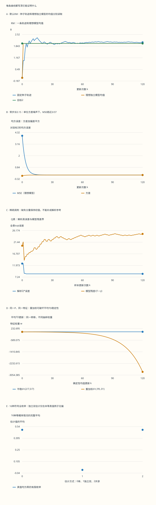

本页目录
MDP III · 随机逼近、Q-learning 与投影边界
前置：Bellman 方程、策略迭代与 LP、条件期望与非负超鞅收敛。目标是读懂一次采样更新、逐分量步长和噪声条件，并分清表格收敛、投影固定点与有限实验各自的结论。
学习层：把收敛假设落实到每一次更新
1. 模型的期望已知，学习者却只能收到样本
继续使用营地与矿区。营地采集奖励 1、留在营地；远行奖励 −2、到矿区；矿区收获奖励 4，以概率 0.4 回营地、0.6 留在矿区；返回奖励 2、到营地。上一页直接把转移概率代入求和，这一页的 Q-learning 更新只接收一次动作的奖励和下一状态。
实验通过生成模型调用某个 \((s,a)\)，再抽取下一状态。“四项循环”会依次调用采集、远行、收获、返回；“稀疏调用”只查询采集与收获。这样可以单独研究覆盖，而无需把每次查询伪装成同一条连续环境轨迹。模型和解析答案仅用于事后核验，不进入学习更新。
先从标量随机逼近开始，再看异步 Q 表，最后加入线性函数逼近。页面中的四种计算有不同身份：RM 的一条种子回放、指定独立噪声模型下的精确矩、确定性的平均 TD 更新，以及估计偏差的 16 种情况全枚举。读图时先确认自己正在看哪一种。
2. 先预测：缺少充分条件，究竟能推出什么
八个控制项包括折现、更新次数、步长、访问范围、RM 输入类型、噪声幅度、种子和 RM 初值。幅度改变 RM 与偏差枚举，不改变 Q 的奖励与转移；RM 初值不改变 Q 初值；线性 TD 对照固定使用 0.1 的均值更新步长。
先判断四件事：平方根步长不满足平方可和是否意味着必然发散？有限四项覆盖是否等于无穷访问？给定当前 Q，下一状态抽样目标能否条件无偏？等真值例子中的独立双估计无偏能否推广成普遍结论？条件都写在题干，参数改变后需要重新预测。
伪随机算法及每次前后状态保留在下载中，用来复现有限回放。确定性的种子本身不证明独立性或鞅差性质；相关定理讨论的是明确指定的理想概率模型。数值折现域为 \([0,0.999]\cup\{1\}\)；\(\gamma=1\) 仅保留有限 Q 更新，不给折现参考或残差除法。
无脚本对照：五图和六行末值读取同一份固定记录。理想模型矩、确定性平均TD与有限种子轨迹分别标注，完整每步与伪随机状态均可下载。

| 预设 | 更新次数 | RM末值 | 理想均值 | 理想MSE | Q解析误差 | 有限覆盖 |
|---|---|---|---|---|---|---|
| default | 120 | 2.06666667 | 2 | 0.00833333333 | 4.73891069 | 4/4 |
| constant | 120 | 2.17402033 | 1.99999999 | 0.0810810811 | 3.91540513 | 4/4 |
| sparse | 120 | 2.06666667 | 2 | 0.00833333333 | 8.54545455 | 2/4 |
| biased | 120 | 2.56666667 | 2.5 | 0.258333333 | 4.73891069 | 4/4 |
| boundary | 120 | 2.06666667 | 2 | 0.00833333333 | 不适用 | 4/4 |
| empty | 0 | 0 | 0 | 4 | 12.7272727 | 0/4 |
下载六组完整记录。种子回放不验证无穷访问或鞅差假设；γ=1的折现Q参考不适用。每个分量的步长和按实际访问次数计算。
3. 一个可以完整证明的 Robbins–Monro 模型
目标是估计 \(\theta^*=2\)。第 \(n\) 次更新前已有过去信息 \(\mathcal F_n\)，观察漂移与新噪声之和，更新
假设 \(\theta_0\) 为有限确定数，步长为预先确定的 \(0<\alpha_n\le1\)，且 \(\sum_n\alpha_n=\infty\)、\(\sum_n\alpha_n^2<\infty\)；噪声条件二阶矩不超过常数 \(\sigma^2\)。这些是假设，不能从一条曲线中“识别出来”。
令 \(e_n=\theta_n-2\)。更新变成 \(e_{n+1}=(1-\alpha_n)e_n+\alpha_n\xi_{n+1}\)。对平方取条件期望，交叉项因鞅差条件消失，所以
这里用了 \((1-\alpha_n)^2\le1-\alpha_n\)。这一步说明为什么控制噪声平方矩很自然：我们正在控制误差平方。
现在定义 \(Y_n=e_n^2+\sigma^2\sum_{k=n}^{\infty}\alpha_k^2\)。尾和有限且确定，上一式给出 \(\mathbb E[Y_{n+1}\mid\mathcal F_n]\le Y_n-\alpha_n e_n^2\)。因此 \(Y_n\) 是非负可积超鞅，几乎处处收敛；再对有限步求期望并望远镜相加，得到 \(\mathbb E\sum_n\alpha_n e_n^2\le\mathbb E Y_0<\infty\)。非负随机变量具有有限期望，意味着该和几乎处处有限。
平方步长尾和趋零，故 \(e_n^2\) 也有几乎处处极限。若此极限在某条路径上严格为正，则尾部 \(e_n^2\) 有正下界，配合 \(\sum\alpha_n=\infty\) 会使 \(\sum\alpha_n e_n^2\) 发散，矛盾。因此 \(e_n\to0\) 几乎处处。
这给出了本页线性标量模型的完整收口。一般非线性漂移 \(h(\theta)\) 还需稳定性、正则性与合适的 Lyapunov 或 ODE 论证，不能只凭两条步长级数就套用。异步压缩映射的扩展可参阅 Tsitsiklis 的随机逼近与 Q-learning 原文。
4. 权重与精确矩：为何单条轨迹不等于均方误差
把递推逐层展开，末值是初值与全部观测的加权和：
这些权重非负且总和为 1，实验把它们全部列出。取 \(\alpha_n=1/(n+1)\) 时，第一次更新完全替换初值，之后每个观测的权重恰为 \(1/N\)，所以 \(\theta_N=2+N^{-1}\sum_{k=1}^N\xi_k\)。这是样本均值，不需要凭曲线形状猜算法在做什么。
若理想噪声独立、均值为 \(b\)、方差为 \(\sigma^2\)，记 \(m_n=\mathbb E\theta_n\)、\(v_n=\operatorname{Var}(\theta_n)\)，则 \(m_{n+1}=(1-\alpha_n)m_n+\alpha_n(2+b)\)，\(v_{n+1}=(1-\alpha_n)^2v_n+\alpha_n^2\sigma^2\)。均方误差是 \(v_n+(m_n-2)^2\)。
图中的“均方误差”来自这组精确矩递推，表示理想重复实验的平均平方误差；某一次实现的 \((\theta_n-2)^2\) 可以在它上下移动。偏置噪声预设令 \(b=1/2\)，因此平均会被推向 \(5/2\)，围绕错误目标稳定不能证明估计正确。
确定性交替输入没有随机集合，实验把均值设为该确定路径、方差设为零，并明确标注其身份。周期平均为零不等于相对于过去的条件均值为零：下一项若已由过去确定，就不自动是鞅差。
5. 步长条件是充分条件，常步长也要分情况
对 \(\alpha_n=(n+1)^{-p}\)，经典两条级数条件要求 \(1/2<p\le1\)。\(p=1/2\) 的平方和是调和级数，确实发散；但“不满足这一组充分条件”不能改写为“算法一定不收敛”。最直接的反例是无噪声标量模型：第一次 \(\alpha_0=1\) 就到达目标，以后保持不动。
常步长 \(\alpha\in(0,1)\) 下，理想独立零均值噪声的方差递推有固定点 \(v_\infty=\alpha\sigma^2/(2-\alpha)\)。均值可以收敛到正确目标，单条路径却通常持续波动。若噪声恒为零，方差为零，误差按 \((1-\alpha)^n\) 缩小；因此“常步长永远不收敛”也过于绝对。
本页的 \(\alpha=0.15\) 给出 \(v_\infty=(3/37)\sigma^2\)。偏置噪声还会留下 \(b^2\) 的均方误差。跟踪随时间变化的目标时，持续更新可能有用，但那是另一种目标函数与误差权衡，不能当作静态参数的精确收敛证明。
6. Q-learning：条件无偏的期望究竟取在哪里
对当前被调用的 \((s,a)\)，样本给出奖励 \(R\) 与下一状态 \(S'\)。只更新这一项：
这里 \(N_t(s,a)\) 是该项本次更新的访问序号，从 1 开始。其他三项保持不变。实验存储更新前后完整 Q 表，以及每次奖励、下一状态、旧值、新值、TD 误差和逐项步长。
给定过去、当前 Q 与所选 \((s,a)\)，新样本按照真实奖励/转移模型产生时，\(\mathbb E[R+\gamma\max_b Q_t(S',b)\mid\mathcal F_t,s,a]=(TQ_t)(s,a)\)。最大值作用于已经确定的 Q；这次期望取在新下一状态上。因此把样本目标减去该条件均值，得到条件均值为零的噪声。
本模型只有“收获”存在转移随机性。给定 \(V_c=\max_aQ_t(c,a)\)、\(V_m=\max_aQ_t(m,a)\)，其目标方差为 \(\gamma^2(0.4)(0.6)(V_c-V_m)^2\)。其他动作目标方差为零。页面逐次计算并显示这些条件矩，不能拿样本噪声本次不等于零当作“有偏”的证据。
7. 异步收敛：四个分量必须各自有足够更新
一个常用的表格折现结论要求：状态动作有限、奖励有界、\(0\le\gamma<1\)；每个状态动作几乎处处被更新无穷次；各分量自己的步长在其更新时间上满足发散和平方可和；采样选择不能预知尚未产生的噪声，样本具有正确的条件分布。
Q 的 Bellman 最优性算子在 sup 范数下是 \(\gamma\)-压缩。若奖励绝对值不超过 \(R_{\max}\)，且步长在 \([0,1]\)，则从有限初值开始，\(\|Q_t\|_\infty\le\max(\|Q_0\|_\infty,R_{\max}/(1-\gamma))\)：每次样本目标的绝对值不超过 \(R_{\max}+\gamma\|Q_t\|_\infty\)，再用凸组合归纳即可。这也给条件噪声二阶矩一个统一界。
压缩性、这个有界性、逐分量步长和条件噪声控制组合起来，才能应用异步随机逼近定理，得到 \(Q_t\to Q^*\) 几乎处处。异步证明不是直接把四个分量当作同步标量 RM；它需要处理不同的更新时间。这里引用前述原文的折现结论，正文已把用到的假设对应到实验记录。
总步数不能代替局部访问序号。完整循环 10 次查询的计数是 \((3,3,2,2)\)，稀疏循环则是 \((5,0,5,0)\)；同一个全局时刻，不同分量的步长部分和不同。“四项都访问过”只描述有限数据，无法验证无穷访问。行为策略与目标策略可以不同，也不等于可以忽略覆盖或噪声条件。
8. 参考答案也需要证书：不要把未收敛迭代叫真值
实验用前两页已推导的解析 \(V^*\) 计算 \(Q^*(s,a)=r(s,a)+\gamma P(\cdot|s,a)^\mathsf TV^*\)。最后一行同时列实际 Q、完整 \(TQ\) 与残差，且对所有有限折现 Q 有 \(\|Q-Q^*\|_\infty\le\|TQ-Q\|_\infty/(1-\gamma)\)。
这个界需要已知模型来计算 \(TQ\)，因此在本页是教学核验器，不是模型未知时自动获得的在线证书。实际系统若从数据估计残差，还得计入估计误差和置信范围。小样本 TD 误差也不等于全表 Bellman 残差。
靠固定次数迭代生成“参考值”在 \(\gamma\) 接近 1 时尤其危险。若没有解析式，就应给参考迭代自身的残差界及其误差传播，不能把它当成精确 \(Q^*\)。页面中的未访问分量一直保留其初值，不会补填为参考答案。
9. 线性 TD：为什么平稳分布进入投影
现在固定目标策略“远行、收获”，所以 \(P=\left(\begin{smallmatrix}0&1\\2/5&3/5\end{smallmatrix}\right)\)，\(r=(-2,4)\)。用一个特征 \(\phi=(1,2)\) 近似两状态价值：\(\widehat V=\phi w\)。它一般无法同时表示真实的两个价值。
目标链的平稳分布是 \(d=(2/7,5/7)\)，令 \(D=\operatorname{diag}(d)\)。在加权内积下，投影为 \(\Pi_D=\phi(\phi^\mathsf TD\phi)^{-1}\phi^\mathsf TD\)。Jensen 不等式与 \(d^\mathsf TP=d^\mathsf T\) 给出 \(\|Pv\|_D^2\le\|v\|_D^2\)；正交投影又是非扩张，因此 \(\Pi_D T_\pi\) 是 \(\gamma\)-压缩。
投影固定点满足 \(\phi^\mathsf TD(r+\gamma P\phi w-\phi w)=0\)，即 \(Aw=b\)，其中 \(A=\phi^\mathsf TD(I-\gamma P)\phi\)、\(b=\phi^\mathsf TDr\)。本例 \(A=(22-20\gamma)/7\)，\(b=36/7\)；默认 \(\gamma=4/5\) 得到 \(w=6\)，近似价值为 \((6,12)\)。
真实价值是 \((90/11,140/11)\)，所以投影固定点不等于精确价值。其完整 Bellman 残差可以非零，只有投影残差为零。由直角分解和压缩性还能得到 \(\|\widehat V-V^\pi\|_D\le(1-\gamma^2)^{-1/2}\|\Pi_DV^\pi-V^\pi\|_D\)。
随机线性 TD 的几乎处处收敛还需要合适的链、特征、步长与矩条件；平均方程稳定只是其中一部分。相关假设及证明见 Tsitsiklis–Van Roy 的线性 TD 分析。本页画的是确定性平均更新 \(w_{k+1}=w_k+0.1(b-Aw_k)\)，没有把它冒充随机轨迹。
10. 改变取样权重后，投影不一定保留稳定性
保持目标策略的 P、r、特征不变，只把抽取状态的权重改为 \(d'=(0.99,0.01)\)。这可以描述生成模型或回放重新加权后的平均更新。它不是目标链的平稳分布，前一节使用的 \(d^\mathsf TP=d^\mathsf T\) 不再成立。
此时 \(A'=1.03-2.012\gamma\)、\(b'=-1.9\)。默认 \(\gamma=0.8\) 给出 \(A'=-0.5796\)，所以均值误差每步乘以 \(1-0.1A'=1.05796>1\)，固定点不稳定。实验保留全部 P、D、投影矩阵、系数和每步权重；不是简单贴上“off-policy 会发散”的标签。
这一个例子证明任意重新加权不自动继承稳定性，不说明所有 off-policy 方法都会发散。重要性权重、梯度 TD 或其他方法需要各自的目标和假设。这里也没有使用函数逼近 Q-learning 的收敛定理，因为一般的那种保证并不存在。
当浮点计算中 \(|A'|<10^{-12}\)，界面不显示病态比值 \(b'/A'\)，但仍列有限均值更新和抑制标记。数学上 \(A'=0,b'\ne0\) 时没有该投影方程的解；数值上“接近零”不等于精确为零。
11. 最大化偏差：另一层期望与独立双估计
设两个动作真值均为零，估计 A 的每项独立等概率取 \(\pm\sigma\)。四种组合的最大值是 \(\sigma,\sigma,\sigma,-\sigma\)，平均为 \(\sigma/2\)。这是跨估计样本的 \(\mathbb E\max A\) 与 \(\max\mathbb E A=0\) 的区别，和第 6 节给定当前 Q 后抽下一状态的条件期望并不矛盾。
再引入独立估计 B，用 A 选动作 \(a^*=\arg\max A\)，用 \(B_{a^*}\) 评价。因为给定 A 后 B 仍独立且各项均值零，本例平均为零。实验枚举全部 16 种 A/B 符号组合；并列时固定选动作 0，不影响结论。如果让 B=A，共享数据又会恢复 \(\sigma/2\) 的偏差。
一般动作真值不相等时，即使评价估计独立无偏，A 仍可能选到真值较低的动作，所以结果可能低估最优值。Double Q-learning 用两张表分开选择与评价，缓解同表最大化偏差，但不能概括成“所有偏差全部消失”。原始构造与这一边界见 Hasselt 的 Double Q-learning 论文。
12. 八道复算题
1. 三个噪声为−1、1、1，调和步长的RM末值是多少？
这是手工输入题，不是指定种子的前三项。步长依次为 \(1,1/2,1/3\)，目标为 2。第一次更新得到 1，第二次为 \(1+(1/2)(2-1+1)=2\)，第三次为 \(2+(1/3)(2-2+1)=7/3\)。与 \(2+(-1+1+1)/3\) 一致；末值的三个观测权重都是 \(1/3\)，初值权重为零。在独立单位方差零均值噪声模型下，该时刻均方误差是 \(1/3\)，而本条实现的平方误差是 \(1/9\)。
2. 常步长0.15、单位方差噪声，为什么MSE不会趋零？
稳态方差 \(v\) 满足 \(v=(17/20)^2v+(3/20)^2\)，所以 \(v=3/37\)。零均值时平均趋向 2，稳态 MSE 也是 \(3/37\)。若噪声均值额外为 \(1/2\)，平均趋向 \(5/2\)，MSE 为 \(3/37+1/4=49/148\)。这是假定持续的独立非退化噪声；若幅度为零，方差项消失，不能沿用同一“持续波动”的解释。
3. 用一个反例说明平方根步长不合经典条件，不等于必然发散。
取 \(\xi_n=0\)。\(\alpha_n=1/\sqrt{n+1}\) 的平方和发散，但 \(\alpha_0=1\) 使第一次更新恰好到达 2，此后漂移为零，算法保持在目标。反例只推翻“必然不收敛”的断言，没有证明该步长在所有有噪声模型中收敛。
4. 10次查询的逐分量步长和如何计算？
完整四项循环的访问数为 \((3,3,2,2)\)。调和步长和分别是 \((11/6,11/6,3/2,3/2)\)，平方和分别是 \((49/36,49/36,5/4,5/4)\)。稀疏两项循环的访问数为 \((5,0,5,0)\)，对应步长和 \((137/60,0,137/60,0)\)；未访问项的部分和确为零。用全局步数除以四，既无法表达不整除时的差异，也会错算稀疏回放。
5. 第一次“收获”更新的样本目标为何无偏？
取 \(\gamma=4/5\)，零 Q 初值，完整循环前两次已把采集更新为 1、远行更新为 −2，矿区两项仍为零。收获若转到营地，目标为 \(4+(4/5)\cdot1=24/5\)；若留在矿区，目标为 4。条件均值为 \((2/5)(24/5)+(3/5)4=108/25\)，两种中心噪声分别为 \(12/25\)、\(-8/25\)，加权平均为零。条件方差为 \(96/625\)。此题枚举两个可能分支，未声称固定种子必然走某一个。
6. 线性TD固定点w=6，为何Bellman残差还不为零？
近似价值为 \((6,12)\)。目标策略算子给出 \(T_\pi\widehat V=(38/5,292/25)\)，减去原向量得到 \((8/5,-8/25)\)。它确实不为零，但与特征的 D 加权内积为 \((2/7)(8/5)+(5/7)\cdot2\cdot(-8/25)=0\)，故投影残差为零。这验证的是一维特征空间里的固定点，不能把它标成精确两状态价值。
7. 重加权平均TD从w=0开始，为什么离固定点越来越远？
\(A'=-1449/2500\)、\(b'=-19/10\)，比值根为 \(w^*=4750/1449>0\)。均值更新因子为 \(q=1-0.1A'=1.05796\)。递推精确解是 \(w_k=w^*+(w_0-w^*)q^k=w^*(1-q^k)\)，从零开始向负方向越走越远。存在代数固定点不保证该更新稳定，根的位置与迭代因子的大小要分别检查。
8. ±1全枚举与高斯例子的最大化偏差各是多少？
两项独立 \(\pm1\) 的最大值平均为 \(1/2\)；独立 B 评价 A 选出的动作，16 项平均为零；若 B=A，平均又为 \(1/2\)。若改成独立标准正态 X、Y，用 \(\max(X,Y)=(X+Y+|X-Y|)/2\)，且 \(X-Y\sim N(0,2)\)，得到 \(\mathbb E\max(X,Y)=1/\sqrt\pi\)。噪声分布不同，数值不同；它们展示同一最大化机制，但不能混用样本或参考值。
后续若把表格换成神经网络、把生成模型换成带选择偏差的日志，新的问题是采样分布、函数逼近与更新目标如何共同作用。先保留本页的可核对基准：每次到底更新了哪一项、目标的条件均值是什么、哪一种范数下有压缩、哪些结论仍只是一条有限记录。